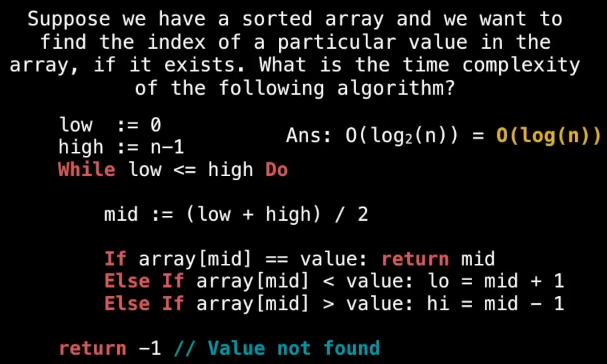
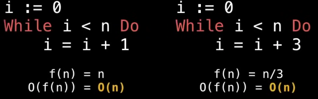
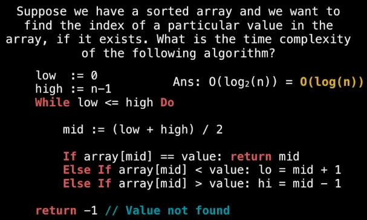
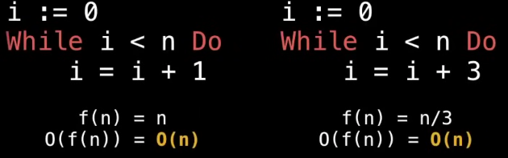

| Abstraction (ADT) | Implementation (DS) |
|---|---|
| List | Dynamic Array Linked List |
| Queue | LinkedList Based Queue Array based queue Stack based queue |
| Map | Tree Map Hash map / Hash table |
| Vehicle | Golf Cart Bicycle Smart Car |
| Time Complexity | Big-O notation | Time Complexity | Big-O notation |
|---|---|---|---|
| Constatnt Time | O(1) | Quadric Time | O(n^2) [order of n square] |
| Logarithmic Time | O(log(n)) | Cubic Time | O(n^3) [order of n cube] |
| Linear Time | O(n) | Exponenetial Time | O(b^n) [Order of b to the power n, b > 1] |
| Linearithmic Time | O(nlog(n)) | Factorial Time | O(n!) |
| Time Complexity | Example code | Time Complexity | Example code |
|---|---|---|---|
| Constatnt Time |
|
Logrithmic Time |

|
| Linear Time |

|
Quadric Time |
|
| Other classic T.C. examples |
|